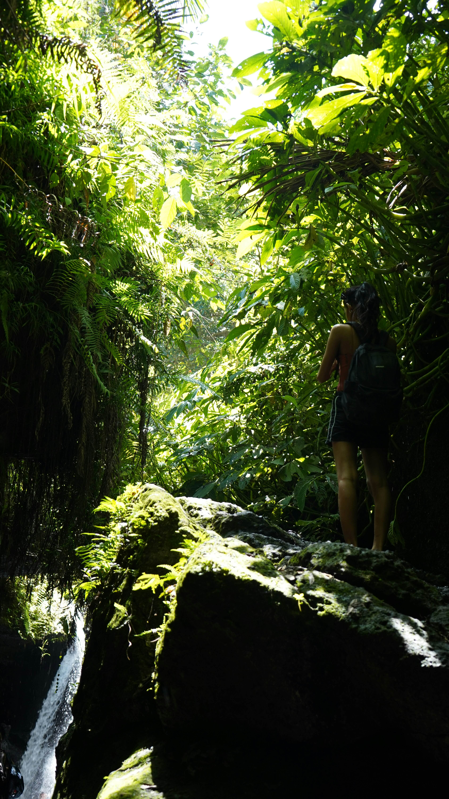

Unforgettable Excursions Across Lombok
Whether you are warming up before your Rinjani hike or unwinding after conquering the peak, our Lombok Day Tours offer the best cultural and nature experiences across the island.
Choose from the magical rainforest waterfalls of Senaru, the tranquil countryside and Black Monkey forest of Tetebatu, or the pristine white sand and beginner surf waves of Selong Belanak Beach. All tours include private AC transport and experienced local guides!

Lombok Island Sightseeing Map
Senaru Waterfalls & Traditional Village Tour


Tour Highlights:
- Sendang Gile Waterfall: A short, easy walk down jungle stairs to witness Lombok’s most famous double-tiered waterfall.
- Tiu Kelep Waterfall: An adventurous trek crossing shallow tropical streams up to a majestic 45-meter waterfall surrounded by mist and lush green walls.
- Senaru Traditional Village (Karang Bajo): Step back in time and experience authentic Sasak culture, ancestral thatched-roof homes, and ancient customs.
USD 45 / person (Min. 2 Pax)
Includes private AC car, local English guide, entrance tickets & mineral water.
Tetebatu Rice Terrace & Black Monkey Forest Tour



Tour Highlights:
- Panoramic Rice Terraces: Walk through serene, emerald-green rice paddies with majestic southern views of Mount Rinjani.
- Monkey Forest Sanctuary: Spot rare, endemic Black Ebony Lutung monkeys roaming freely in their protected jungle habitat.
- Hidden Waterfalls & Local Spices: Discover hidden fresh-water cascades and learn about organic coffee, vanilla, and cocoa farming.
USD 50 / person (Min. 2 Pax)
Includes private AC car, local walking guide, forest permits & fresh local lunch.
Selong Belanak Beach & Surfing Excursion


Tour Highlights:
- Pristine White Sand Crescent: Selong Belanak is world-renowned for its silky soft white sand and gentle rolling ocean waves.
- #1 Beginner Surfing Spot: The sandy, obstacle-free seabed makes it Lombok's absolute best bay to learn surfing safely.
- Iconic Sunset & Buffalo Parade: Catch the legendary afternoon sight of local buffalo herds walking along the shoreline as the sun dips below the horizon.
USD 55 / person (Min. 2 Pax)
Includes private AC car transfer, driver, beach parking & optional surf board rental coaching.
Want to Combine Trekking with a Day Tour?
We can seamlessly integrate these day tours into your pre-trek arrival day or post-trek relaxation itinerary.
CUSTOMIZE TOUR VIA WHATSAPP